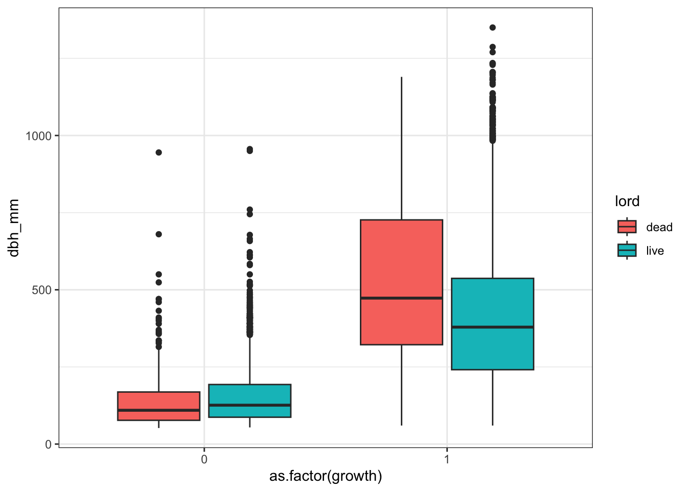

library(tidyverse);library(pool);library(readxl); library(purrr); library(readr); library(dplR); library(RPostgreSQL); library(knitr);library(dplyr)
#
# trees %>%
# filter(lord %in% "dead") %>%
# group_by(tree_status_census_2) %>%
# summarise(cnt = n(),
# dbh = mean(dbh_mm))A1. Tree Selection
1 Overview
The output of this document is three files: - ‘full_trees_sp’ containing living trees in the first census with an undamaged canopy - species traits are added to this table - ‘full_trees_comp’ containing living trees in the first census regardless of canopy damage for calculation of a competitive index - ‘full_trees_dist’ containing all trees, live or dead, in the first census - not restricted to trees on the plot.
Packages
Database connection
# Connect to the database
KELuser <- dbPool(RPostgreSQL::PostgreSQL(),
dbname = 'remoteforestsorg',
host = '91.239.201.14',
port = 4010,
user = 'remoteforests002',
password = 'COVBtxQ5')2 Plot ID data gather
plot.id.2 <- tbl(KELuser, "plot") %>%
filter(country %in% c("Albania", "Bosnia", "Bulgaria", "Croatia", "Romania"),
foresttype %in% c("beech"),
!census %in% c(1),
!is.na(lng),
!is.na(lat)) %>%
filter(!location %in% c("Fagaras", "Maramures")) %>%
pull(id)Warning: <PostgreSQLConnection> uses an old dbplyr interface
ℹ Please install a newer version of the package or contact the maintainer
This warning is displayed once every 8 hours.Second-census plot data
plot.id.2.coll <- tbl(KELuser, "plot") %>%
filter(id %in% plot.id.2) %>%
dplyr::select(plotid, newplotsize = plotsize) %>%
collect()plot.id.1 <- tbl(KELuser, "plot") %>%
filter(ownership %in% 1,
country %in% c("Albania", "Bosnia", "Bulgaria", "Croatia", "Romania"),
foresttype %in% c("beech"),
plottype %in% c(3, 4),
census %in% c(1),
!is.na(lng),
!is.na(lat)) %>%
filter(!location %in% c("Fagaras", "Maramures")) %>%
pull(id)Check differences in plot size between first and second census
Good to know the plot size differences…
plot.id.2.coll %>%
inner_join(., tbl(KELuser, "plot") %>%
filter(id %in% plot.id.1) %>%
dplyr::select(plotid, plotsize), by = "plotid", copy = TRUE) %>%
mutate(sizechnge = ifelse(newplotsize == plotsize, "no change", "change")) %>%
filter(sizechnge %in% "change")# A tibble: 5 × 4
plotid newplotsize plotsize sizechnge
<chr> <int> <int> <chr>
1 CRO_SMR_104_2 1500 1000 change
2 CRO_SMR_094_2 1500 1000 change
3 CRO_SMR_103_2 1500 1000 change
4 CRO_SMR_105_1 1500 1000 change
5 CRO_SMR_094_1 1500 1000 change 3 Trees for likelihood analysis
Filtering parameters for trees in first census.
- !onplot %in% c(0,99) - trees from outside plot boundaries
For first census data collection I am just collecting all trees. I will filter out for unharmed status from the first census in a few sections.
tree.census.1 <- tbl(KELuser, "tree") %>%
filter(!onplot %in% c(0,99)) %>%
dplyr::select(treeid, tree_id = id, plot_id, growth, layer, onplot, x_m, y_m, dbh_mm, decay, species, treetype, status) %>%
inner_join(., tbl(KELuser, "plot") %>% filter(id %in% plot.id.1) %>%
dplyr::select(location, stand, plotid, id, lng, lat, date, altitude_m, slope, aspect), by = c("plot_id" = "id")) %>%
inner_join(., tbl(KELuser, "species_fk") %>% dplyr::select(-sp_code), by = c("species" = "id")) %>%
distinct(., treeid, .keep_all = TRUE) %>%
collect()Trees excluded are those not found within the plot boundaries or are missing their on plot distinction.
tree.census.2 <- tbl(KELuser, "tree") %>%
filter(!onplot %in% c(0,99)) %>%
rename(tree_id = id) %>%
dplyr::select(treeid, onplot_re = onplot, status_re = status, growth_re = growth, layer_re = layer, re_species = species, dbh_mm_re = dbh_mm, re_x_m = x_m, re_y_m = y_m, re_decay = decay, plot_id) %>%
inner_join(., tbl(KELuser, "species_fk") %>% dplyr::select(-sp_code) %>% rename(sp_type_re = sp_type, sp_group_dist_re = sp_group_dist), by = c("re_species" = "id")) %>%
inner_join(., tbl(KELuser, "plot") %>% filter(id %in% plot.id.2) %>%
dplyr::select(date_re = date, location, stand, plotid, id), by = c("plot_id" = "id")) %>%
dplyr::select(-onplot_re) %>%
collect() I filtered out the trees that were dead in the first census and any new in-growth to capture only mortality between first and second censuses. I further filtered out any trees with a damaged canopy status and corrected for any missing or incorrect information in the second census or first census like those trees that came back alive in the second census or those that were deleted after the first because they died and decayed between censes.
Undamaged canopy in first census
full_trees <- tree.census.1 %>%
full_join(., tree.census.2 %>% rename(re_plot_id = plot_id), by = c("location", "stand", "plotid", "treeid")) %>% #ignore all of the added trees from ingrowth in the second census - there are some larger trees that were likely missed
mutate(
x_m = ifelse(!is.na(re_x_m), re_x_m, x_m), # replace x - operating off assumption that second measure is more accurate
y_m = ifelse(!is.na(re_y_m), re_y_m, y_m), # replace y
dbh_mm = ifelse(is.na(dbh_mm), dbh_mm_re, dbh_mm), # if first dbh is na, replace first with second measure
dbh_mm_re = ifelse(is.na(dbh_mm_re)|dbh_mm > dbh_mm_re, dbh_mm, dbh_mm_re), # if second dbh is na, replace with first
re_decay = ifelse(is.na(re_decay),10, re_decay), # 10 decay for census 1 trees missing in census 2 - assumed dead
lord1 = ifelse(decay > -1 & !status %in% c(1:4), "dead", "live"), # live or dead in census 1
lord = ifelse(re_decay > -1 & !status_re %in% c(1:4), "dead", "live"), # live or dead in census 2
re_species = ifelse(is.na(re_species)|re_species %in% 99, species, re_species), # if second species is na, replace with first
species = ifelse(is.na(species)|species %in% 99, re_species, species), # basically same as other species stuff above and below
sp_group_dist_re = ifelse(is.na(sp_group_dist_re)|sp_group_dist_re %in% 99,sp_group_dist, sp_group_dist_re),# basically same as other species stuff above and below
sp_group_dist = ifelse(is.na(sp_group_dist)|sp_group_dist %in% 99, sp_group_dist_re, sp_group_dist), # basically same as other species stuff above and below
decay = ifelse(lord1 %in% "dead" & lord %in% "live", re_decay, decay), # replace decay in first with second if tree was alive in second
status = ifelse(lord1 %in% "dead" & lord %in% "live", status_re, status), # replace status in first census with second if the tree was living in second census
status_re = ifelse(is.na(status_re), 99, status_re),
status = ifelse(status_re %in% 1 & status %in% c(2:4), status_re, status),
growth_re = ifelse(is.na(growth_re) & lord %in% "dead", -1, growth_re), #replace growth with n
growth = ifelse((growth %in% c(-1,99) & lord %in% "live"), growth_re, growth),
growth = ifelse(growth %in% c(0) & growth_re %in% c(1), growth_re, growth),
growth = ifelse(growth %in% 99, 0, growth),
layer_re = ifelse(lord %in% "live" & layer_re %in% c(-1,99), layer, layer_re),
layer = ifelse(lord %in% "live" & layer %in% c(-1,99), layer_re, layer),
layer = ifelse(lord1 %in% "dead" & lord %in% "live" & layer %in% c(-1,99), layer_re, layer),
lord = ifelse(re_decay %in% -1 & status_re %in% c(1:4), "live", "dead"), # live\dead in census 2
lord1 = ifelse(decay %in% -1 & status %in% c(1:4), "live", "dead"),
date_re = case_when(
is.na(date_re) & !location %in% "Semenic" ~ date + 5,
is.na(date_re) & location %in% "Semenic" ~ date + 7,
TRUE ~ date_re)) %>%
filter(!is.na(tree_id)) %>% # trees present in first census
filter(lord1 %in% "live",
status %in% c(1))
table(full_trees$lord, full_trees$status)
1
dead 738
live 14084 table(full_trees$lord, full_trees$growth_re)
-1 0 1 99
dead 738 0 0 0
live 0 6734 7338 12full_trees %>%
filter(stand %in% "Risnjak") %>%
group_by(plotid) %>%
summarise(n())# A tibble: 14 × 2
plotid `n()`
<chr> <int>
1 CRO_RIS_009_1 46
2 CRO_RIS_009_2 42
3 CRO_RIS_010_1 46
4 CRO_RIS_010_2 56
5 CRO_RIS_011_1 81
6 CRO_RIS_011_2 90
7 CRO_RIS_015_1 69
8 CRO_RIS_015_2 39
9 CRO_RIS_016_1 33
10 CRO_RIS_016_2 35
11 CRO_RIS_017_1 41
12 CRO_RIS_017_2 45
13 CRO_RIS_022_1 62
14 CRO_RIS_022_2 46species_table <- read_csv("Data/Species_table.csv") %>%
select(-1,-3,-4, -5)New names:
Rows: 83 Columns: 10
── Column specification
──────────────────────────────────────────────────────── Delimiter: "," chr
(5): species, sp_type, Genus_nam, Species_nam, SPCD dbl (5): ...1,
wood_density_gcm3_Forrester, wood_density_zanne_2009_gcm3, wo...
ℹ Use `spec()` to retrieve the full column specification for this data. ℹ
Specify the column types or set `show_col_types = FALSE` to quiet this message.
• `` -> `...1`full_trees <- full_trees %>%
select(treeid, tree_id, location, stand, plotid, plot_id, growth, layer, onplot, x_m, y_m, dbh_mm, decay, species, sp_group_dist, sp_type, treetype, status, status_re, layer_re, growth_re, lat, lng, lord, date, date_re) %>%
# filter(!stand %in% "Risnjak") %>%
inner_join(., species_table, by = "species")
full_trees %>%
group_by(lord, sp_group_dist) %>%
summarise(n())`summarise()` has grouped output by 'lord'. You can override using the
`.groups` argument.# A tibble: 10 × 3
# Groups: lord [2]
lord sp_group_dist `n()`
<chr> <chr> <int>
1 dead Abies 133
2 dead Acer 19
3 dead Fagus 522
4 dead Others 7
5 dead Picea 57
6 live Abies 2784
7 live Acer 329
8 live Fagus 10300
9 live Others 66
10 live Picea 605write.csv(full_trees, file = "Data/full_trees.csv")
save(full_trees, file="Data/full_trees.Rdata")4 Trees for Competitive Index
full_trees_comp <- tree.census.1 %>%
full_join(., tree.census.2 %>% rename(re_plot_id = plot_id), by = c("location", "stand", "plotid", "treeid")) %>% #ignore all of the added trees from ingrowth in the second census - there are some larger trees that were likely missed
mutate(
x_m = ifelse(!is.na(re_x_m), re_x_m, x_m), # replace x - operating off assumption that second measure is more accurate
y_m = ifelse(!is.na(re_y_m), re_y_m, y_m), # replace y
dbh_mm = ifelse(is.na(dbh_mm), dbh_mm_re, dbh_mm), # if first dbh is na, replace first with second measure
dbh_mm_re = ifelse(is.na(dbh_mm_re)|dbh_mm > dbh_mm_re, dbh_mm, dbh_mm_re), # if second dbh is na, replace with first
re_decay = ifelse(is.na(re_decay),10, re_decay), # 10 decay for census 1 trees missing in census 2 - assumed dead
lord1 = ifelse(decay > -1 & !status %in% c(1:4), "dead", "live"), # live or dead in census 1
lord = ifelse(re_decay > -1 & !status_re %in% c(1:4), "dead", "live"), # live or dead in census 2
re_species = ifelse(is.na(re_species)|re_species %in% 99, species, re_species), # if second species is na, replace with first
species = ifelse(is.na(species)|species %in% 99, re_species, species), # basically same as other species stuff above and below
sp_group_dist_re = ifelse(is.na(sp_group_dist_re)|sp_group_dist_re %in% 99,sp_group_dist, sp_group_dist_re),# basically same as other species stuff above and below
sp_group_dist = ifelse(is.na(sp_group_dist)|sp_group_dist %in% 99, sp_group_dist_re, sp_group_dist), # basically same as other species stuff above and below
decay = ifelse(lord1 %in% "dead" & lord %in% "live", re_decay, decay), # replace decay in first with second if tree was alive in second
status = ifelse(lord1 %in% "dead" & lord %in% "live", status_re, status), # replace status in first census with second if the tree was living in second census
status_re = ifelse(is.na(status_re), 99, status_re),
status = ifelse(status_re %in% 1 & status %in% c(2:4), status_re, status),
growth_re = ifelse(is.na(growth_re) & lord %in% "dead", -1, growth_re), #replace growth with n
growth = ifelse((growth %in% c(-1,99) & lord %in% "live"), growth_re, growth),
growth = ifelse(growth %in% c(0) & growth_re %in% c(1), growth_re, growth),
layer_re = ifelse(lord %in% "live" & layer_re %in% c(-1,99), layer, layer_re),
layer = ifelse(lord %in% "live" & layer %in% c(-1,99), layer_re, layer),
layer = ifelse(lord1 %in% "dead" & lord %in% "live" & layer %in% c(-1,99), layer_re, layer),
lord = ifelse(re_decay %in% -1 & status_re %in% c(1:4), "live", "dead"), # live\dead in census 2
lord1 = ifelse(decay %in% -1 & status %in% c(1:4), "live", "dead")) %>% # live\dead in census 1
filter(!is.na(tree_id),
lord1 %in% "live") #%>%
# filter(!stand %in% "Risnjak") # trees present in first censusSave .csv & .Rdata
write.csv(full_trees_comp, file = "Data/full_trees_comp.csv")
save(full_trees_comp, file="Data/full_trees_comp.Rdata")5 A look at mortality
kable(full_trees %>%
group_by(sp_group_dist, lord) %>%
summarise(count = n()) %>%
pivot_wider(names_from = lord, values_from = count))`summarise()` has grouped output by 'sp_group_dist'. You can override using the
`.groups` argument.| sp_group_dist | dead | live |
|---|---|---|
| Abies | 133 | 2784 |
| Acer | 19 | 329 |
| Fagus | 522 | 10300 |
| Others | 7 | 66 |
| Picea | 57 | 605 |
kable(full_trees %>%
group_by(growth, lord) %>%
summarise(count = n()) %>%
pivot_wider(names_from = lord, values_from = count))`summarise()` has grouped output by 'growth'. You can override using the
`.groups` argument.| growth | dead | live |
|---|---|---|
| 0 | 466 | 6091 |
| 1 | 272 | 7993 |
ggplot(full_trees)+
geom_boxplot(aes(x = as.factor(growth), y = dbh_mm, fill = lord))+
theme_bw()
6 Trees for disturbance
tree.census.1 <- tbl(KELuser, "tree") %>%
select(treeid, tree_id = id, plot_id, growth, layer, onplot, x_m, y_m, dbh_mm, decay, decay_wood, species, treetype, status, treetype) %>%
inner_join(., tbl(KELuser, "plot") %>% filter(id %in% plot.id.1) %>%
select(location, stand, plotid, id, lng, lat, date, altitude_m, slope, aspect), by = c("plot_id" = "id")) %>%
inner_join(., tbl(KELuser, "species_fk") %>% select(-sp_code), by = c("species" = "id")) %>%
distinct(., treeid, .keep_all = TRUE) %>%
collect()tree.census.2 <- tbl(KELuser, "tree") %>%
select(treeid, onplot_re = onplot, status_re = status, growth_re = growth, layer_re = layer, re_species = species, dbh_mm_re = dbh_mm, re_x_m = x_m, re_y_m = y_m, re_decay = decay, decay_wood_re = decay_wood, plot_id) %>%
inner_join(., tbl(KELuser, "species_fk") %>% select(-sp_code) %>% rename(sp_type_re = sp_type, sp_group_dist_re = sp_group_dist), by = c("re_species" = "id")) %>%
inner_join(., tbl(KELuser, "plot") %>% filter(id %in% plot.id.2) %>%
select(date_re = date, location, stand, plotid, id), by = c("plot_id" = "id")) %>%
select(-onplot_re) %>%
collect() full_trees_dist <- tree.census.1 %>%
full_join(., tree.census.2 %>% rename(re_plot_id = plot_id), by = c("location", "stand", "plotid", "treeid")) %>% #ignore all of the added trees from ingrowth in the second census - there are some larger trees that were likely missed
mutate(
x_m = ifelse(!is.na(re_x_m), re_x_m, x_m), # replace x - operating off assumption that second measure is more accurate
y_m = ifelse(!is.na(re_y_m), re_y_m, y_m), # replace y
dbh_mm = ifelse(is.na(dbh_mm), dbh_mm_re, dbh_mm), # if first dbh is na, replace first with second measure
dbh_mm_re = ifelse(is.na(dbh_mm_re)|dbh_mm > dbh_mm_re, dbh_mm, dbh_mm_re), # if second dbh is na, replace with first
re_decay = ifelse(is.na(re_decay),10, re_decay), # 10 decay for census 1 trees missing in census 2 - assumed dead
lord1 = ifelse(decay > -1 & !status %in% c(1:4), "dead", "live"), # live or dead in census 1
lord = ifelse(re_decay > -1 & !status_re %in% c(1:4), "dead", "live"), # live or dead in census 2
re_species = ifelse(is.na(re_species)|re_species %in% 99, species, re_species), # if second species is na, replace with first
species = ifelse(is.na(species)|species %in% 99, re_species, species), # basically same as other species stuff above and below
sp_group_dist_re = ifelse(is.na(sp_group_dist_re)|sp_group_dist_re %in% 99,sp_group_dist, sp_group_dist_re),# basically same as other species stuff above and below
sp_group_dist = ifelse(is.na(sp_group_dist)|sp_group_dist %in% 99, sp_group_dist_re, sp_group_dist), # basically same as other species stuff above and below
decay = ifelse(lord1 %in% "dead" & lord %in% "live", re_decay, decay), # replace decay in first with second if tree was alive in second
status = ifelse(lord1 %in% "dead" & lord %in% "live", status_re, status), # replace status in first census with second if the tree was living in second census
status_re = ifelse(is.na(status_re), 99, status_re),
status = ifelse(status_re %in% 1 & status %in% c(2:4), status_re, status),
growth_re = ifelse(is.na(growth_re) & lord %in% "dead", -1, growth_re), #replace growth with n
growth = ifelse((growth %in% c(-1,99) & lord %in% "live"), growth_re, growth),
growth = ifelse(growth %in% c(0) & growth_re %in% c(1), growth_re, growth),
layer_re = ifelse(lord %in% "live" & layer_re %in% c(-1,99), layer, layer_re),
layer = ifelse(lord %in% "live" & layer %in% c(-1,99), layer_re, layer),
layer = ifelse(lord1 %in% "dead" & lord %in% "live" & layer %in% c(-1,99), layer_re, layer),
lord = ifelse(re_decay %in% -1 & status_re %in% c(1:4), "live", "dead"), # live\dead in census 2
lord1 = ifelse(decay %in% -1 & status %in% c(1:4), "live", "dead")) %>% # live\dead in census 1
filter(!is.na(tree_id))# trees present in first census
table(full_trees_dist$growth)
-1 0 1 99
3371 7276 8530 37 write.csv(full_trees_dist, file = "Data/full_trees_dist.csv")7 Closing
Close database
poolClose(KELuser)